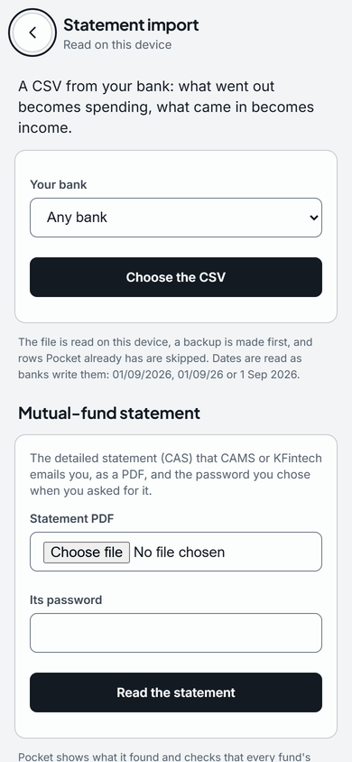

A budget app that never asks for your bank login
- Category
- Budget
- By
- Reviewed
- Read
- 4 min
Why not a login
Apps that connect to a bank need access to the account, through a login or an account aggregator consent, and the transactions usually sit on their servers too.
A statement file needs neither: you download it from net banking, as you would to print it, and the file never leaves your computer.
Getting the statement
In net banking, the account statement can be downloaded for any period, usually as PDF, Excel or CSV.
Pocket reads the CSV. Where a bank offers only Excel, opening the file in a spreadsheet and saving it as CSV gives the same columns. Pocket knows the column layouts of HDFC, ICICI, SBI, Axis and Kotak statements, and finds the date, debit and credit columns in others. Dates are read as Indian banks write them, day first: 01/10/2026, 01/10/26, 2026-10-01 and 1 Oct 2026 all read the same.
An example
Five lines from an HDFC Bank statement, as the CSV has them:
Date,Narration,Withdrawal Amt.,Deposit Amt.,Closing Balance
01/10/26,NEFT CR-ACME TECHNOLOGIES SALARY OCT,,185000.00,245000.00
02/10/26,UPI-SWIGGY-swiggy@icici-Order,456.00,,244544.00
03/10/26,NEFT-RENT OCTOBER,32000.00,,212544.00
05/10/26,ACH D- HDFC LTD EMI,11800.00,,200744.00
07/10/26,ELECTRICITY BESCOM,1870.00,,198874.00And what Pocket does with them, run through its own importer:
| Date | Narration | Amount | Category | Why |
|---|---|---|---|---|
| 1 Oct 2026 | NEFT CR-ACME TECHNOLOGIES SALARY OCT | +₹1,85,000.00 | Income | Every credit is filed as income |
| 2 Oct 2026 | UPI-SWIGGY-swiggy@icici-Order | ₹456.00 | Food | Suggested from the word “swiggy” |
| 3 Oct 2026 | NEFT-RENT OCTOBER | ₹32,000.00 | Housing | Suggested from the word “rent” |
| 5 Oct 2026 | ACH D- HDFC LTD EMI | ₹11,800.00 | EMI | Suggested from the word “emi” |
| 7 Oct 2026 | ELECTRICITY BESCOM | ₹1,870.00 | Utilities | Suggested from the word “electricity” |
- Credits are income; the salary is filed as income straight away.
- Each spend waits in the Inbox with a suggested category, and the reason for it. The reason is a word in the narration, how you filed the same payee before (a UPI ID counts as the payee), or that it looks like a transfer between your own accounts. Nothing is filed until you save it, and a rule you teach (for example, that entries containing "BESCOM" are Utilities) applies from then on.
- The statement's closing balance, ₹1,98,874.00 on 7 Oct 2026, is offered as a bank account. It is added only if you say yes.
Importing the next month
A statement that overlaps the last one is safe to import: a transaction already in Pocket, with the same date, amount and description, is skipped.
Importing this example a second time adds 0 entries. Pocket backs up its database before it adds anything, and a line it cannot read is listed with the reason, never guessed.
From transactions to a budget
Once spending is filed, Pocket shows each month's income against spending, by category.
It shows a budget for each category, or the 50/30/20 split of needs, wants and savings. It also shows how many months your cash would last. The working behind each total opens to show its entries.

- A bank CSV: what went out becomes spending, what came in becomes income.
- A CAMS or KFintech statement: its file and the password you chose when you asked for it.
Questions
Does Pocket need my net-banking password?
No. It reads the statement file you download from net banking, on your own device.
Which banks' statements does Pocket read?
It knows the CSV layouts of HDFC, ICICI, SBI, Axis and Kotak statements, and finds the date, debit and credit columns in others.
What happens when the same statement is imported twice?
A transaction already in Pocket, with the same date, amount and description, is skipped: importing the example a second time adds 0 entries.
Previous guide: Old vs new tax regime, worked through
Pocket is free on Windows, macOS, Linux and Android, and keeps everything on your own device: download Pocket.